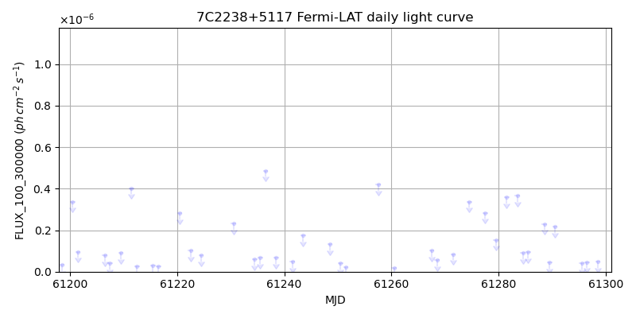
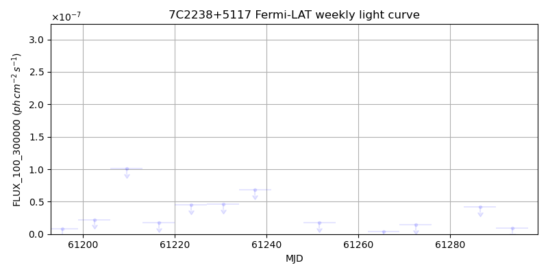
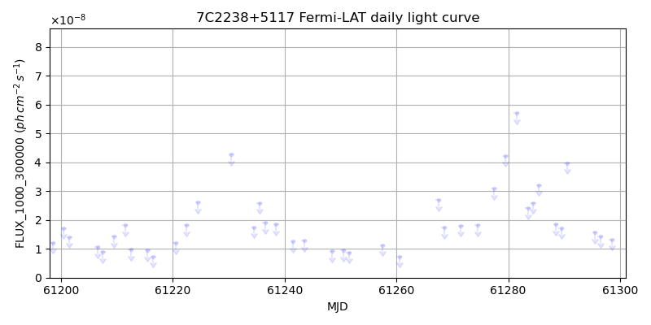
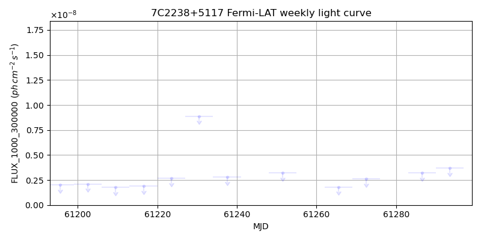

LAT Lightcurve site: https://fermi.gsfc.nasa.gov/ssc/data/access/lat/msl_lc/source/7C_2238p5117
NED: Query
Time of last update of this page: UT: 2026-09-19 15:30 (MJD: 61302.646)
| Property | Value |
|---|---|
| R.A. | 22:40:19.92 |
| Dec. | 51:33:10.8 |
| z | 0.000 |
| 3FGL SpectrumType | |
| 3FGL PL Index | -1.00 |
| 3FGL Flux_100_300000 | -1.00e+00 |
| 3FGL Flux_1000_300000 | -1.00e+00 |
| 3FGL Flux >200 GeV | -1.00e+00 |
| 3FGL Extrap. Crab >200 GeV | -1.00 |
| 3FGL Flux After EBL Absorption >200GeV | -1.00e+00 |
| 3FGL EBL Crab Fraction >200GeV | -1.00 |

| MJD | dMJD | Flux | dFlux | Frac3FGL | FracCrab>200GeV | EBLFracCrab>200GeV |
|---|---|---|---|---|---|---|
| 61289.50 | 0.50 | 4.39e-08 | 0.00e+00 | 0.00 | 0.00 | -0.00 |
| 61290.50 | 0.50 | 2.17e-07 | 0.00e+00 | 0.00 | 0.00 | -0.00 |
| 61295.50 | 0.50 | 4.06e-08 | 0.00e+00 | 0.00 | 0.00 | -0.00 |
| 61296.50 | 0.50 | 4.63e-08 | 0.00e+00 | 0.00 | 0.00 | -0.00 |
| 61298.50 | 0.50 | 4.77e-08 | 0.00e+00 | 0.00 | 0.00 | -0.00 |

| MJD | dMJD | Flux | dFlux | Frac3FGL | FracCrab>200GeV | EBLFracCrab>200GeV |
|---|---|---|---|---|---|---|
| 61265.50 | 3.50 | 4.08e-09 | 0.00e+00 | 0.00 | 0.00 | -0.00 |
| 61272.50 | 3.50 | 1.45e-08 | 0.00e+00 | 0.00 | 0.00 | -0.00 |
| 61279.50 | 3.50 | 7.79e-07 | 0.00e+00 | 0.00 | 0.00 | -0.00 |
| 61286.50 | 3.50 | 4.18e-08 | 0.00e+00 | 0.00 | 0.00 | -0.00 |
| 61293.50 | 3.50 | 9.21e-09 | 0.00e+00 | 0.00 | 0.00 | -0.00 |

| MJD | dMJD | Flux | dFlux | Frac3FGL | FracCrab>200GeV | EBLFracCrab>200GeV |
|---|---|---|---|---|---|---|
| 61289.50 | 0.50 | 1.72e-08 | 0.00e+00 | 0.00 | 0.00 | -0.00 |
| 61290.50 | 0.50 | 3.97e-08 | 0.00e+00 | 0.00 | 0.00 | -0.00 |
| 61295.50 | 0.50 | 1.57e-08 | 0.00e+00 | 0.00 | 0.00 | -0.00 |
| 61296.50 | 0.50 | 1.43e-08 | 0.00e+00 | 0.00 | 0.00 | -0.00 |
| 61298.50 | 0.50 | 1.32e-08 | 0.00e+00 | 0.00 | 0.00 | -0.00 |

| MJD | dMJD | Flux | dFlux | Frac3FGL | FracCrab>200GeV | EBLFracCrab>200GeV |
|---|---|---|---|---|---|---|
| 61265.50 | 3.50 | 1.80e-09 | 0.00e+00 | 0.00 | 0.00 | -0.00 |
| 61272.50 | 3.50 | 2.61e-09 | 0.00e+00 | 0.00 | 0.00 | -0.00 |
| 61279.50 | 3.50 | 5.68e-08 | 0.00e+00 | 0.00 | 0.00 | -0.00 |
| 61286.50 | 3.50 | 3.23e-09 | 0.00e+00 | 0.00 | 0.00 | -0.00 |
| 61293.50 | 3.50 | 3.68e-09 | 0.00e+00 | 0.00 | 0.00 | -0.00 |
--------------------------------------------------------- Using user-supplied coords: 22:40:19.92 51:33:10.8 2000 --------------------------------------------------------- FLWO UT night of: 2026-09-20 Local Sid. @ Midnight: 23:32 Sunset (-15.0) (local, UT): 19:31 02:31 Sunrise (-15.0) (local, UT): 05:04 12:04 Moonrise (local, UT): Moonset (local, UT): 00:13 07:13 Moon phase: 0.64 --------------------------------------------------------- AzTime LSID UT Obj_el Obj_az Mn_el Mn_az Sep. --------------------------------------------------------- 19:31 19:03 02:31 45.9 46.5 30.5 184.0 94.5 20:01 19:33 03:01 50.5 45.5 29.7 191.5 94.4 20:31 20:03 03:31 55.0 43.4 28.1 198.7 94.2 21:01 20:33 04:01 59.3 40.0 25.8 205.5 94.1 21:31 21:03 04:31 63.2 34.6 22.9 211.9 94.0 22:01 21:33 05:01 66.5 26.9 19.4 217.8 93.8 22:31 22:03 05:31 68.8 16.3 15.4 223.2 93.7 23:01 22:33 06:01 69.9 3.4 11.0 228.1 93.5 23:31 23:04 06:31 69.6 350.0 6.3 232.6 93.4 00:01 23:34 07:01 67.8 338.1 1.5 236.7 93.2 00:31 00:04 07:31 64.9 328.9 -2.6 240.5 93.0 01:01 00:34 08:01 61.3 322.5 -9.5 244.1 92.8 01:31 01:04 08:31 57.2 318.1 -15.1 247.4 92.6 02:01 01:34 09:01 52.8 315.4 -20.8 250.6 92.4 02:31 02:04 09:31 48.2 313.9 -26.6 253.6 92.2 03:01 02:34 10:01 43.6 313.3 -32.5 256.6 92.0 03:31 03:04 10:31 38.9 313.4 -38.4 259.6 91.8 04:01 03:34 11:01 34.3 314.1 -44.5 262.6 91.6 04:31 04:04 11:31 29.8 315.2 -50.5 265.8 91.3 05:01 04:34 12:01 25.3 316.7 -56.6 269.4 91.1 05:04 04:37 12:04 24.9 316.9 -57.1 269.7 91.1 --------------------------------------------------------- Dark hours >55 deg.: 1.55 srcstart (UT): 2026-09-20 07:13 srcend (UT): 2026-09-20 08:46